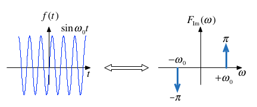

Worksheet 13¶
To accompany Chapter 5.2 Fourier transforms of commonly occurring signals¶
This worksheet can be downloaded as a PDF file. We will step through this worksheet in class.
An annotatable copy of the notes for this presentation will be distributed before the second class meeting as Worksheet 13 in the Week 6: Classroom Activities section of the Canvas site. I will also distribute a copy to your personal Worksheets section of the OneNote Class Notebook so that you can add your own notes using OneNote.
You are expected to have at least watched the video presentation of Chapter 5.2 of the notes before coming to class. If you haven’t watch it afterwards!
After class, the lecture recording and the annotated version of the worksheets will be made available through Canvas.
Reminder of the Definitions¶
Last time we derived the Fourier Transform by evaluating what would happen when a periodic signal was made periodic. Let us restate the definitions.
The Fourier Transform¶
Used to convert a function of time \(f(t)\) to a function of radian frequency \(F(\omega)\):
The Inverse Fourier Transform¶
Used to convert a function of frequency \(F(\omega)\) to a function of time \(f(t)\):
Note, the factor \(2\pi\) is introduced because we are changing units from radians/second to seconds.
Duality of the transform¶
Note the similarity of the Fourier and its Inverse.
This has important consequences in filter design and later when we consider sampled data systems.
Table of Common Fourier Transform Pairs¶
This table is adapted from Table 8.9 of Karris. See also: Wikibooks: Engineering Tables/Fourier Transform Table and Fourier Transform—WolframMathworld for more complete references.
Name |
\(f(t)\) |
\(F(\omega)\) |
Remarks |
|
|---|---|---|---|---|
1. |
Dirac delta |
\(\delta(t)\) |
\(1\) |
Constant energy at all frequencies. |
2. |
Time sample |
\(\delta(t-t_0)\) |
\(e^{-j\omega t_0}\) |
|
3. |
Phase shift |
\(e^{j\omega t_0}\) |
\(2\pi\delta(\omega - \omega_0)\) |
|
4. |
Signum |
\(\operatorname{sgn} (x)\) |
\(\displaystyle{\frac{2}{j\omega}}\) |
also known as sign function |
5. |
Unit step |
\(u_0(t)\) |
\(\displaystyle{\frac{1}{j\omega}+\pi\delta(\omega)}\) |
|
6. |
Cosine |
\(\cos \omega_0 t\) |
\(\pi\left[\delta(\omega-\omega_0)+\delta(\omega+\omega_0)\right]\) |
|
7. |
Sine |
\(\sin \omega_0 t\) |
\(-j\pi\left[\delta(\omega-\omega_0)-\delta(\omega+\omega_0)\right]\) |
|
8. |
Single pole |
\(e^{-at}u_0(t)\) |
\(\displaystyle{\frac{1}{j\omega + a}}\) |
\(a \gt 0\) |
9. |
Double pole |
\(te^{-at}u_0(t)\) |
\(\displaystyle{\frac{1}{(j\omega + a)^2}}\) |
\(a \gt 0\) |
10. |
Complex pole (cosine component) |
\(e^{-at}\cos \omega_0 t\;u_0(t)\) |
\(\displaystyle{\frac{j\omega + a}{((j\omega + a)^2+\omega^2}}\) |
\(a\gt 0\) |
11. |
Complex pole (sine component) |
\(e^{-a t}\sin \omega_0 t\;u_0(t)\) |
\(\displaystyle{\frac{\omega}{((j\omega + a)^2+\omega^2}}\) |
\(a\gt 0\) |
Some Selected Fourier Transforms¶
The Dirac Delta¶

Proof: uses sampling and sifting properties of \(\delta(t)\).
Matlab:
imatlab_export_fig('print-svg') % Static svg figures.
syms t omega omega_0 t0;
u0(t) = heaviside(t); % useful utility function
fourier(dirac(t))
Related:
fourier(dirac(t - t0),omega)
DC¶
Matlab:
A = sym(1); % take one to be a symbol
fourier(A,omega)
Related by frequency shifting property:
Cosine (Sinewave with even symmetry)¶

Note: \(f(t)\) is real and even. \(F(\omega)\) is also real and even.
Matlab:
fourier(cos(omega_0*t),omega)
Sinewave¶

Note: \(f(t)\) is real and odd. \(F(\omega)\) is imaginary and odd.
Matlab:
fourier(sin(omega_0*t),omega)
Signum (Sign)¶
The signum function is a function whose value is equal to
Matlab:
fourier(sign(t),omega)
The transform is:

This function is often used to model a voltage comparitor in circuits.
Example 4: Unit Step¶
Use the signum function to show that

Proof¶
so
From previous results \(1\Leftrightarrow 2\pi\delta(\omega)\) and \(\operatorname{sgn} x = 2/(j\omega)\) so by linearity
QED
Matlab:
fourier(u0(t),omega)
Example 5¶
Use the results derived so far to show that
Hint: linearity plus frequency shift property.
Example 6¶
Use the results derived so far to show that
Hint: Euler’s formula plus solution to example 2.
Important note: the equivalent example in Karris (Section 8.4.9 Eq. 8.75 pp 8-23—8-24) is wrong!
See worked solution in OneNote for corrected proof.
Derivation of the Fourier Transform from the Laplace Transform¶
If a signal is a function of time \(f(t)\) which is zero for \(t\le 0\), we can obtain the Fourier transform from the Laplace transform by substituting \(s\) by \(j\omega\).
Example 8: Single Pole Filter¶
Given that
Compute
Example 9: Complex Pole Pair cos term¶
Given that
Compute
Fourier Transforms of Common Signals¶
We shall conclude this session by computing as many of the the Fourier transform of some common signals as we have time for.
rectangular pulse
triangular pulse
periodic time function
unit impulse train (model of regular sampling)